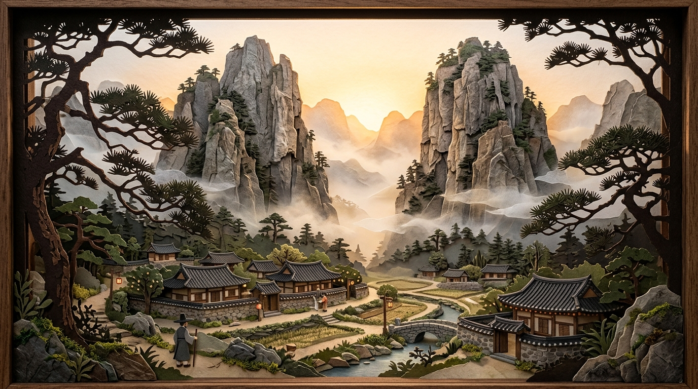
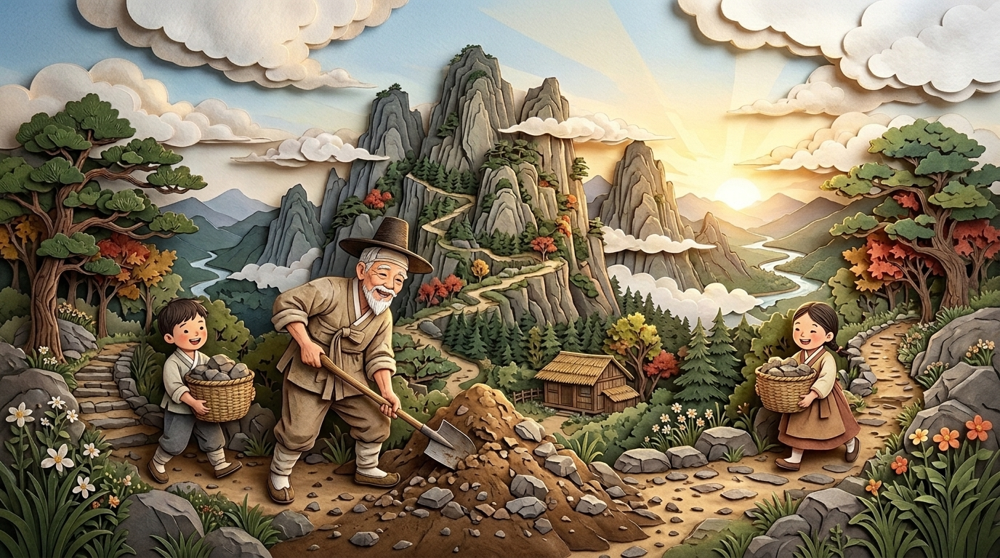
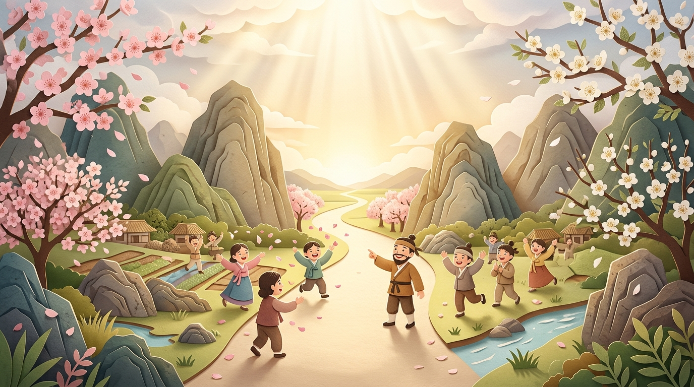

📜 고사성어 종이 극장
제1막 / 3막
우공이산 (愚公移山)
살아 움직이는 한지 종이 디오라마 · 마우스를 올리면 입체 시점이 따라 움직입니다



제1막 · 거대한 벽
집 앞을 가로막은 두 개의 큰 산
옛날 중국에 아흔 살이 된 ‘우공’ 할아버지가 살았어요. 집 바로 앞에 태행산과 왕옥산이라는 너무 큰 산 두 개가 가로막고 있어서, 어디를 가든 멀리 돌아가야만 했지요. 우공은 가족들과 함께 삽을 들고 산을 옮기기로 결심했답니다!
버튼을 3번 눌러 우공 할아버지와 함께 햇살이 비치는 길을 열어 보세요!
愚어리석을 우
公공 공 (할아버지)
移옮길 이
山뫼 산
⚫ 바둑 속 지혜: 처음엔 바둑판이 넓고 상대 집이 커 보여도, 포기하지 않고 한 수 한 수 정성을 다해 두면 결국 승리의 길을 열 수 있어요!
💡 확인 퀴즈: ‘우공이산’이 가르쳐 주는 가장 중요한 마음가짐은 무엇일까요?